136
Page 40
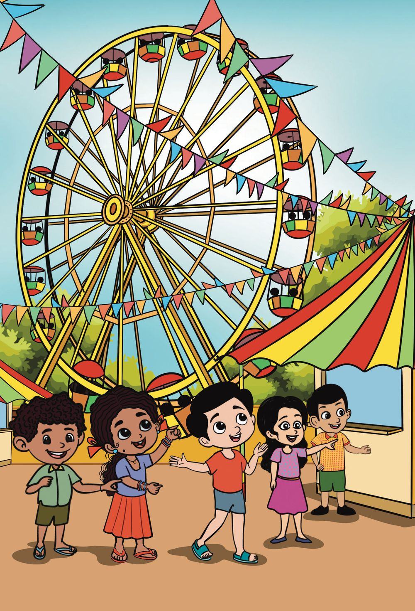

Page 41
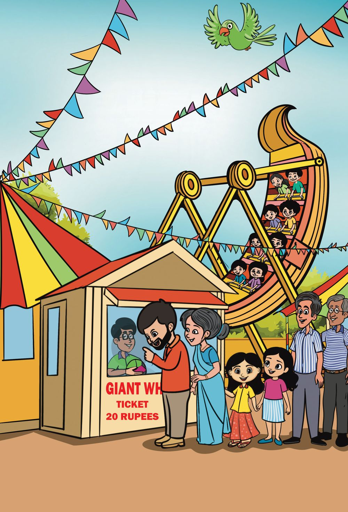

8 Jingling Coins
137
Page 42
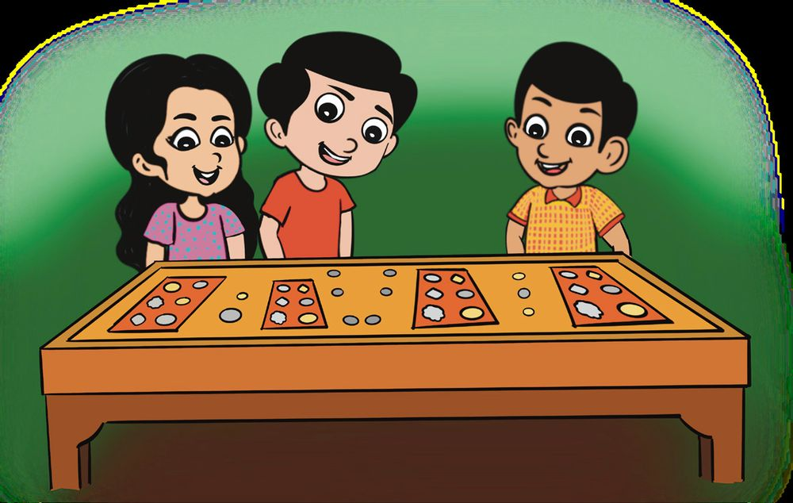
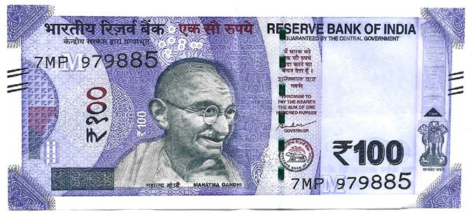
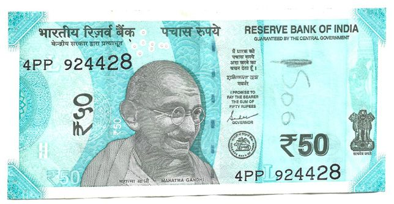
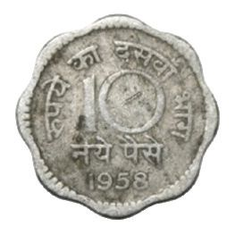
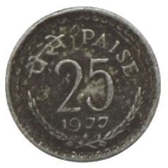
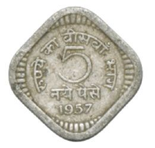
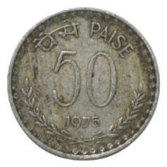
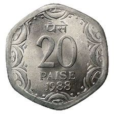

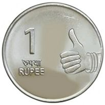
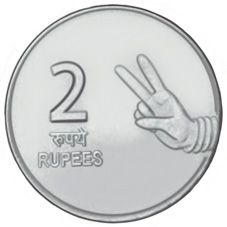
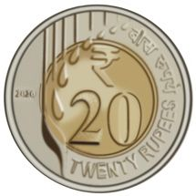

Coin Exhibition
Anu and Jithu went to see village fest. They reached the coin exhibition room. Circle those you have seen.
Are the fifty-rupee note and the hundred-rupee note of the same size? Put one over the other and check. Do this with other notes also.
138
Page 43
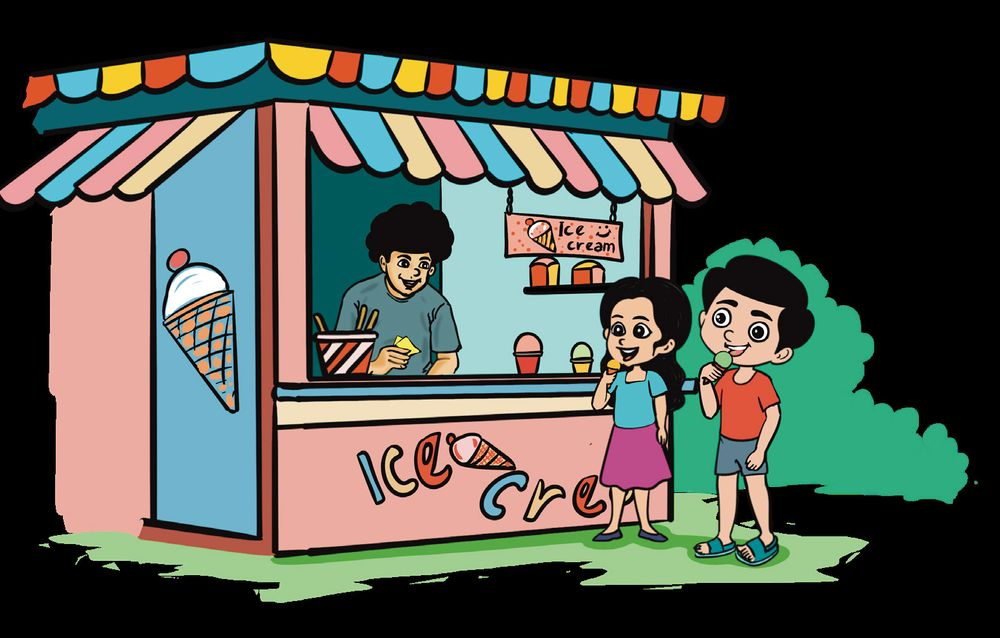


They reached the ice cream booth.
Both bought ice cream. Price of one is 15 rupees. Anu gave 3 notes.
How much did Anu give? Jithu gave 2 notes. Which all notes make 15 rupees?
139
Page 44
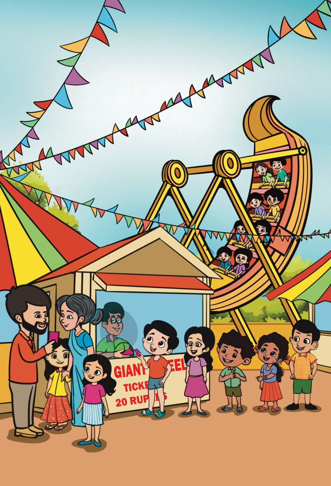

140
Page 45
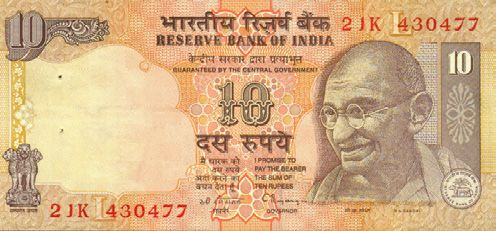
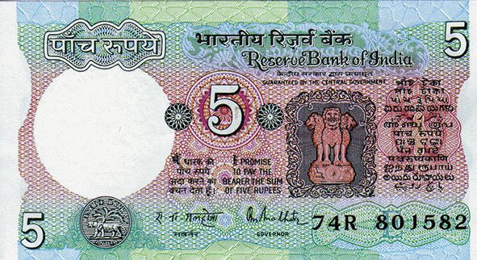
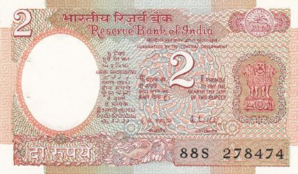

How about a ride in the giant wheel
I am a bit afraid. But I will come.
These are the notes Anu has in her purse.
Is this enough to buy one ticket for the ride? How much more does she need?
rupees
Jithu paid the balance. Jithu paid in coins. What all coins did Jithu give? How many of each? Can you find it?
141
Page 46


Ticket Counter
ഇരണ്ടാാളുുക്ക്് ടിിക്കറ്റ്് വോ�ോണുു. എത്തര പൈൈസ ആയിി ഇക്കുു?
What...?
എണ്ണ കൈൈയിില്് ഇരുുപൊ�ൊത്് ഉരുുപ്പിിയേ� ഉള.
They want tickets for two. He is asking how much.
142
She has only twenty rupees with her.
Page 47


Let us calculate the price
Price list Item
Price
Crayon
5 rupees
Watercolour
10 rupees
Eraser
2 rupees
Adithya bought crayon, watercolour and eraser. Total price of these three? Which notes and coins did Adithya give? Manu bought crayon and eraser. How much should he pay? Which notes and coins did he give?
143
Page 48


Notes to coins Anu, Jithu, Ayisha, Murugan and Thomas changed their notes to coins. Who all took coins for the same amount as notes. Let’s write their names.
5
5
1
10
1
2
Anu
Ayisha 2
2
2 1
2
2 Jithu
2 2
1 1
Murugan 1
144
2
5
1
5
1 2
2
Thomas 1
2
2
Page 49


To the shop
Price list Item
Price
Pencil
5 rupees
Pen
10 rupees
Notebook
20 rupees
Roopesh went to the shop with his son. They bought a pen and a pencil. How much should Roopesh pay?
Price of a pencil
rupees
Price of a pen
rupees
Total price for a pencil and a pen
rupees
Total price for two pencils and a pen
rupees
How did you find it?
145
Page 50


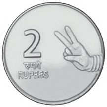


Coins to notes. Find notes equal to each set of coins and join them.
146
Page 51


Adding coins
Mary has
rupees
Which are the coins needed to make it 15 rupees?
Which all coins will make it 20 rupees? Can you find different ways?
147
Page 52


How many coins?
10 rupees
6 rupees
I can buy a bangle with 2 coins I have.
7 rupees
To buy a horn, I must give 3 coins I have.
Which coin? Which coin?
I have 2 coins. I can buy a chain with these.
148
Which are the coins?
Page 53


My piggy bank Children are counting the money collected in the Piggy bank of their class. Jithu sorted the coins. Let us sort and count the coins.
How much actually?
How much do you think we have?
100 rupees, perhaps?
Number Rupees
1 rupee coins
8
2 rupee coins
10
5 rupee coins
4
10 rupee coins
5
I will give you 2 ten-rupee notes and 4 five-rupee notes.
They sorted coins into sets of 10 rupees. Remaining in a single set. How many sets?
How much?
How much left? How did you find it?
149